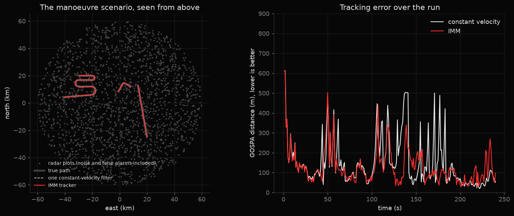

C++20 · estimation · real time
vakt multi-target radar tracker
Takes noisy measurements with false alarms and missed detections and keeps one track per object. It runs two motion models side by side (straight flight and coordinated turn) and weights them by how well each fits, so a jet in a hard turn is not lost. Data association, track start and deletion, ASTERIX output, a lock-free queue between sensor and tracker, and a scorer that measures how good the result is.
- 124 m vs 144 mmean tracking error, IMM against one model, 40 runs
- 271 → 60identity switches, same runs
- 34tests, no warnings at /W4
60 identity switches is still too many. Simulated data only. Both are in the README as next steps.